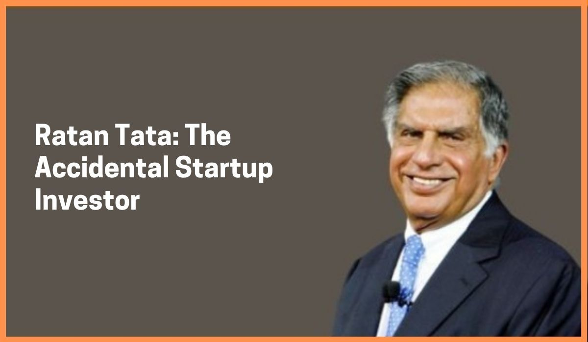

Introduction

Ratan Naval Tata (born 28 December 1937) is an Indian industrialist, philanthropist and former chairman of Tata Sons.
He was chairman of the Tata Group from 1990 to 2012, and interim chairman from October 2016 through February 2017.
He continues to head its charitable trusts. In 2008, he received the Padma Vibhushan, the second highest civilian
honour in India, after receiving the Padma Bhushan, the third highest civilian honour in 2000.
He is the son of Naval Tata, who was adopted by Ratanji Tata, son of Jamsetji Tata, the founder of the Tata Group.
He graduated from the Cornell University College of Architecture with a bachelor's degree in architecture.
He joined Tata in 1961, where he worked on the shop floor of Tata Steel. He later succeeded J. R. D.
Tata's as chairman of Tata Sons upon the latter's retirement in 1991. Under his tenure the Tata Group acquired Tetley,
Jaguar Land Rover, and Corus, in an attempt to turn Tata from a largely India-centric group into a global business.
Tata is also one of the largest philanthropists in the world, having donated around 60–65% of his income to charity.
Career

In the 1970s, Tata was given a managerial position in the Tata group. He achieved initial success by turning the subsidiary National
Radio and Electronics (NELCO) around, only to see it collapse during an economic slowdown.In 1991, J. R. D. Tata stepped down
as chairman of Tata Sons, naming him his successor. Initially, Tata faced stiff resistance from the heads of various subsidiaries,
who had a large amount of operational freedom under the senior Tata's tenure. In response, Tata implemented a number of policies
designed to consolidate power, including the implementation of a retirement age, having subsidiaries report directly to the group
office, and requiring subsidiaries to contribute their profit to building the Tata group brand. Tata prioritised innovation and
delegated many responsibilities to younger talent. Under his leadership, overlapping operations
between subsidiaries were streamlined into company-wide operations, with the group exiting unrelated businesses to take on
globalisation.